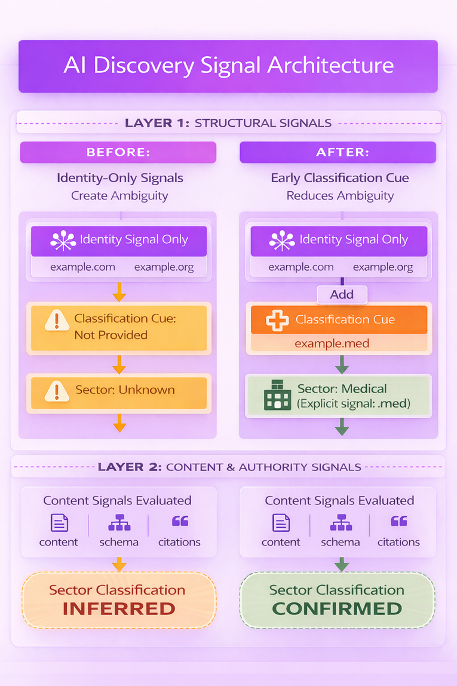
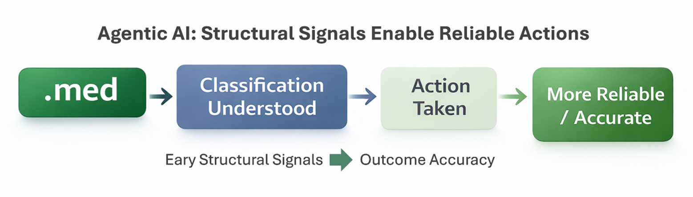

- Executive Summary
- The Shift Toward AI-Mediated Discovery
- Structural Signals (Layer 1) vs. Semantic Signals (Layer 2)
- How AI Expresses Inference
- The Layer-1 Structural Classification Signal
- Safety Engineering and Explicit Context
- Why Medical Is a High-Stakes Domain
- The Role of the .med Namespace in AI-Driven Discovery
- Implications for AI-Driven Discovery
- Agentic AI: The Shift from Interpretation to Action
- Key Takeaways
- Looking Ahead
We are observing a fundamental shift as artificial intelligence reshapes how medical information is discovered and interpreted online. [1] Increasingly, large language models (LLMs) and AI-assisted search systems act as intermediaries between users and the web. As this shift accelerates, the structural signals organizations provide at the earliest stages of web discovery are likely to play an increasingly important role in how AI systems interpret medical expertise. While AI systems evaluate many signals and behaviors vary across models, structural signals represent one of the earliest sources of context available during interpretation.
The Domain Name System forms part of the internet's foundational addressing infrastructure. Because top-level domains function as stable namespace identifiers within that system, they are among the earliest machine-readable signals (Layer-1) encountered when discovery systems begin interpreting information sources.
General-purpose domains such as .com or .org may signal organizational identity (e.g. commercial or non-profit) but do not signal sector classification.
This distinction, identity without sector classification, is a significant source of ambiguity in AI-mediated discovery because interpretation is primarily left to downstream inference based on content, structured data, citations, and links (Layer-2). [2]
When present, Layer-1 classification signals such as the .med top-level domain can reduce ambiguity, helping to limit the risk of misleading or less reliable information. This follows a safety engineering principle that critical context should be explicitly signaled whenever possible.
In high-stakes domains such as medical, where inaccurate interpretation can affect patient well-being, reducing ambiguity in how medical organizations are classified supports safer health information environments. [3]
In this context, structural signals (Layer-1) do not replace content and authority (Layer-2). They establish context early, allowing downstream signals to function as confirmation rather than inference. Reducing reliance on AI inference requires explicit Layer-1 classification signals.
This is a timing shift: establish classification early in discovery so downstream signals confirm rather than infer. Layer-1 signals enable this by establishing context at the outset of discovery.
For most of the past two decades, web discovery has been mediated primarily through search engines. Search engines index and rank web pages by crawling the internet and analyzing page content, links, and user engagement signals.
However, the emergence of large language models and AI-assisted search is changing how users access information. Instead of navigating through lists of links, users increasingly ask direct questions and receive synthesized responses generated from multiple sources.
General-purpose domains (e.g. .com, .org) leave a structural gap in sector classification. In traditional search, this gap is addressed downstream. In AI-driven discovery, where interpretation occurs in layers, that gap moves upstream and becomes materially important. [4]
This shift alters the discovery process:
Traditional Search Model
- User Query
- Search engine crawls and ranks pages
- User selects links
- Content interpreted by the user
AI-Mediated Discovery
- User question
- AI system retrieves candidate sources
- AI interprets entities and context
- AI synthesizes and presents an answer
In this environment, AI systems must rapidly determine:
- Who an entity is
- What sector an entity belongs to
- How authoratative the source may be
These decisions influence how information is interpreted and surfaced to users. When early sector classification is clear, AI systems rely less on inference and can interpret information more consistently. [5]
AI discovery systems typically rely on multiple layers of signals when interpreting web entities.[6]
These signals can be broadly categorized into two types:
Layer-1: Structural Signals
Structural signals are available before a page's content is retrieved or parsed.
Examples include:
- Domain names
- URL structure
- Host identity
- Top-level domain classification
Because these signals are immediately observable, they often help AI systems form initial hypotheses about an entity.
Layer-2: Semantic Signals
Semantic signals require deeper analysis and are extracted after a page is retrieved.
Examples include:
- Page content
- Structured data (schema markup)
- Citations and references
- Knowlede graph relationships
These signals allow systems to confirm or refine earlier interpretations.
Large language models generate responses by predicting what is most likely to come next, not by evaluating or communicating certainty. As a result, probabilistic inferences are often expressed with high fluency and confidence, even when the underlying classification is weak or ambiguous. This behavior is a function of model design: LLMs are optimized for coherence, not for signaling uncertainty. [7]
In safety-critical sectors such as medical information, this dynamic has meaningful implications. When structural classification signals are absent, AI systems must infer context, and those inferences may be delivered in an authoritative manner. This increases the importance of explicit, machine-readable signals that reduce reliance on inference and support more accurate interpretation across AI-mediated discovery systems.
Although AI systems may sound evaluative, their responses are generated through prediction rather than explicit evaluation. They do not inherently:
- Weigh evidence
- Assess Correctness
- Compare Alternatives
- Form Judgements
Instead, they perform a single operation:
They predict the next most likely signal in context. When key structural cues are missing, this predictive process requires the model to infer, effectively a probabilistic estimate, in order to continue. [8]
This behavioral dynamic underscores why early, explicit structural signals play such a critical role in guiding AI-mediated interpretation.
General-purpose namespaces such as .com or .org can identify the organization (who you are) but do not signal its sector (what you do). This distinction, identity without sector classification, means there is no inherent machine-readable indication that the context is medical, effectively inviting AI systems to infer sector classification.
This reliance on inference introduces avoidable risk, particularly in safety-critical contexts where classification should be explicit rather than inferred. [9]
A Layer-1 structural classification signal provides the missing sector information at the point of entry. Reducing ambiguity is fundamentally a timing issue. The diagram below illustrates how the presence or absence of a Layer-1 classification signal (shown as a “cue” in Figure 1) changes how and when AI discovery systems establish sector context.

Figure 1 illustrates a simple “inform and confirm” approach where classification context is established upfront and then confirmed through content and authority signals, reducing ambiguity by not relying solely on inference.
Without a Layer-1 Classification Cue
- Layer 1
- Identity Signal (.com/.org)
- Sector unknown
- Layer 2
- Content and authority signals interpreted
- Sector inferred
With a Layer-1 Classification Cue
- Layer 1
- Identity Signal + classification cue (.med)
- Sector understood
- Layer 2
- Content and authority signals interpreted
- Sector confirmed
An early, explicit Layer-1 classification signal can allow AI systems to confirm sector context rather than infer it. This reflects a broader safety principle used in medicine, aviation, and safety engineering: whenever possible, critical context should be signaled explicitly rather than left for systems to infer it.
Across many safety-critical systems including aviation, medicine, and industrial engineering, designers seek to minimize reliance on inference when critical context is involved. [10]
Examples Include:
- Aircraft instrumentation explicitly signals altitude and speed rather than relying on visual inference.
- Medical systems clearly label medications, dosages, and warnings.
- Network protocols include headers that specify how content should be interpreted.
The principle underlying these systems is straightforward:
Explicit classification signals reduce ambiguity.
By applying this principle to digital infrastructure, it suggests that early structural signals identifying medical expertise can improve clarity for systems interpreting online medical information.
- If a system must infer context, it relies on probabilistic interpretation of signals
- For example, SmithHospital.org appears explicit to humans, but for machines it requires further interpretation.
- If a system receives explicit structural signals, it can move from inference toward confirmation, reducing classification ambiguity
- SmithHospital.med provides an explicit structural signal of medical context at the earliest stage of AI discovery.
- No structural cue
- -> System must interpret signals
- -> classification inferred
- Explicit structural cue
- -> system receives direct signal
- -> classification confirmed
Medical information falls into the category that search platforms often describe as "Your Money or Your Life" (YMYL) content. Errors or misinterpretation in these domains can have direct consequences for individuals. [11]
Explicit signals -> clearer interpretation -> safer information environments.
Due to this risk, AI systems often apply heightened scrutiny when evaluating medical information sources.
Provide early signals that reduce ambiguity, thus later stages evaluate within the correct context.
In medical contexts, reducing ambiguity is aligned with patient safety. This helps to ensure that information is clearly understood and grounded in reliable sources. Structural signals for medical classification can therefore contribute to reducing ambiguity during the earliest stages of AI interpretation.
The .med top-level domain is a dedicated namespace for the global medical sector.
As an early structural classification signal, the .med namespace aligns with the NIST AI Risk Management Framework's MAP function, which establishes and documents system context and intended use ahead of subsequent risk assessment and management activities. [12]
As noted by the Institute for AI Policy and Strategy (IAPS), defense-in-depth doctrine holds that “no single layer, no matter how robust, is exclusively relied upon.” [13]
In the context of AI-mediated discovery, a structural classification signal answers a single question:
“What subject area does this belong to?”
It does not answer:
- "Is this entity legitimate?"
- "Is this advice correct?"
- "Is this actor authorized?"
The reliability of a structural classification signal depends on its restraint: by encoding only subject context, it remains unambiguous, interpretable, and usable by AI systems.
Within AI-mediated discovery, the role of .med is limited to a single determination: it is medical context.
This addresses the signal gap inherent in general-purpose namespaces (e.g., .com, .org) because AI systems can rely on narrowly scoped structural signals for classification, as explicit signals reduce uncertainty and improve model reliability.
When classification is present, it enables AI systems to more efficiently apply appropriate downstream controls, which can include:
- higher safety thresholds
- strciter evidence requirements
- medical-specific policy constraints
- increased skepticism toward unsupported claims
In other words, classification enables mitigation. It does not replace it.
When classification is missing, downstream systems must infer context, increasing uncertainty and thereby reducing the reliability of safety-related outcomes. This is a well-established challenge in machine learning systems operating under uncertainty. [14]
As a public namespace, a .med domain establishes an early-stage classification signal at registration, immediately addressing the absence of explicit medical context at the infrastructure layer.
By addressing this signal gap:
- Uncertainty is reduced
- Model reliability improves
- Overall system efficiency increases
From a system design perspective, the .med namespace can be viewed as conceptually consistent with structured classification frameworks such as Schema.org, providing an early-stage, machine-interpretable indication of sector context.
Registration patterns indicate adoption across several categories of medical relevance, including:
- Pharamceutical brands
- Therapeutic categories
- Clinical specialties
- Institutional identifiers
Examples include domains corresponding to pharmaceutical products, therapeutic categories like analgesics, and healthcare organizations.
As AI systems increasingly mediate access to medical information, structural signals that identify expertise are likely to play an expanding role in how entities are interpreted.
Potential implications include:
- clearer identification of medical entities
- reduced ambiguity during initial entity classification
- improved context for downstream semantic analysis
While no single signal determines how AI systems evaluate information, explicit structural signals complement existing content-based signals.
Explicit signals reduce inference cost.
Agentic AI refers to systems that don't just interpret requests or generate responses, but can initiate actions, coordinate tasks, and make decisions on behalf of users. This marks a shift from AI as a passive tool to AI as an active participant in digital workflows. [15]
When AI systems begin acting rather than merely interpreting, the timing of classification becomes more critical. A misclassification in traditional AI might lead to an incorrect answer. In agentic systems, when the namespace is not explicit, this can lead to incorrect actions which is a more consequential failure mode, especially in medical contexts.

As agentic AI becomes more capable, the gap between “misunderstanding” and “misacting” widens. An explicit namespace such as .med introduces a structural guardrail, providing a clear, machine-readable signal of medical context that helps guide and constrain how actions are selected, prioritized, and executed.
• Observed Shift in Discovery Models.
Historically, discovery systems relied primarily on downstream signals, as traditional search engines used them to infer relevance and determine organic ranking order.
Our perspective is that the current AI environment suggests a shift toward earlier, explicit structural signals to reduce ambiguity in how information is later interpreted downstream.
• AI discovery systems increasingly interpret entities and context earlier.
As AI systems retrieve and synthesize information, early structural signals for identifying context and sector classification become more important in reducing reliance on downstream inference.
• Structural signals operate at the infrastructure layer.
Unlike downstream optimization strategies that require continuous investment, structural signals provide durable contextual cues with relatively low operational complexity.
• Explicit structural signals shift interpretation from inference to confirmation.
When sector context is signaled structurally, downstream signals such as content, schema, citations, and authority function as confirming evidence rather than the sole basis for interpretation.
• Established organizations can hedge through domain diversification.
Organizations anchored to .com or .org domains can complement their existing infrastructure by adopting sector-specific identifiers like .med, introducing structural classification alongside established web presence.
• New entrants can establish both identity and classification from the outset.
Organizations entering the medical sector are not constrained by legacy infrastructure and can signal both identity and sector context at the structural layer through sector-specific domains such as .med.
• The broader principle reflects established safety-system design.
Across fields such as medicine, aviation, and engineering, critical context is explicitly signaled whenever possible rather than left to inference.
Taken together, these shifts reflect a transition from downstream inference to early-stage classification, where structural signals establish context and downstream signals confirm it.
The internet's infrastructure has historically evolved alongside the systems that interpret it. Traditional search has driven years of page-level optimization, resulting in dense and often noisy information environments that AI systems must interpret. In high-stakes sectors such as medical, this complexity carries greater risk. Medical organizations that provide clear structural signals reduce this risk by establishing context early, before interpretation begins.
The rise of AI-mediated discovery encourages a renewed focus on structural signals that provide early context for machine interpretation. In practice, AI systems evaluate many signals simultaneously. Structural signals establish early context, while content and authority signals provide confirming evidence. Because domains are among the earliest structural signals in web discovery, they provide a practical way to establish context at the outset of AI interpretation.
.med operates as a defined namespace for the medical sector, but its primary value in AI-driven discovery comes from providing an explicit structural classification signal. Its role is not to influence how signals are weighted, but to ensure that critical classification context is present at the earliest stage of interpretation.
Organizations cannot control how AI systems interpret signals, but they can control how clearly their own digital infrastructure communicates identity and classification within that process.
.med domains represent a practical implementation of this principle. As AI continues to reshape how information is discovered, structural signals for identifying expertise are set to become an increasingly important component of the internet's evolving medical information ecosystem.
Footnotes
- OpenAI. (2026). AI as a Healthcare Ally: How Americans are Navigating the System with ChatGPT. https://cdn.openai.com/pdf/2cb29276-68cd-4ec6-a5f4-c01c5e7a36e9/OpenAI-AI-as-a-Healthcare-Ally-Jan-2026.pdf
- Manning, C. D., Raghavan, P., & Schütze, H. (2008). Introduction to Information Retrieval. Cambridge University Press. Chapter 13 (pp. 253-286). https://nlp.stanford.edu/IR-book/pdf/irbookonlinereading.pdf
- World Health Organization. (2021). Global Strategy on Digital Health 2020-2025 (p.16). https://iris.who.int/server/api/core/bitstreams/1f4d4a08-b20d-4c36-9148-a59429ac3477/content
- McDermid, J., Jia, Y., & Habli, I. (2024). Upstream and Downstream AI Safety: Both on the Same River? https://arxiv.org/abs/2501.05455
- Manning et al. (2008), pp. 253-286.
- Bilal, M., et al. (2025). Toward an AINative Internet: Rethinking the Web Architecture for Semantic Retrieval. https://arxiv.org/pdf/2511.18354
- Bender, E. M., et al. (2021). On the Dangers of Stochastic Parrots: Can Language Models Be Too Big? (p. 616). https://dl.acm.org/doi/pdf/10.1145/3442188.3445922
- Shanahan, M. (2024). Role Play with Large Language Models. https://www.nature.com/articles/s41586-023-06647-8
- Leveson, N. G. (2011). Engineering a Safer World: Systems Thinking Applied to Safety. MIT Press. http://sunnyday.mit.edu/safer-world.pdf
- Hakim, Painter. (2025). The Need for Guardrails with Large Language Models in Pharmacovigilance. Nature Scientific Reports. https://www.nature.com/articles/s41598-025-09138-0
- Google. (2024). Search Quality Rater Guidelines, Section 2.3 (p. 26). https://services.google.com/fh/files/misc/hsw-sqrg.pdf
- NIST, Artificial Intelligence Risk Management Framework (AI RMF 1.0), 5.2 (MAP)and 5.3-5.4 (MEASURE, MANAGE), pp. 24-32. https://nvlpubs.nist.gov/nistpubs/ai/NIST.AI.100-1.pdf
- Institute for AI Policy and Strategy (IAPS), Adapting Cybersecurity Frameworks to Manage Frontier AI Risks: A Defense in Depth Approach, arXiv:2408.07933, pp. 2-3. https://arxiv.org/pdf/2408.07933
- Rudner, T.G.J.; Toner, H. Key Concepts in AI Safety: Reliable Uncertainty Quantification in Machine Learning; CSET, Georgetown University, 2024; pp. 1-5. https://cset.georgetown.edu/wp-content/uploads/CSET-Key-Concepts-in-AI-Safety-Reliable-Uncertainty-Quantification-in-Machine-Learning.pdf
- McKinsey & Company. (2025). Agentic AI Explained: When Machines Don't Just Chat but Act. https://www.mckinsey.com/featured-insights/mckinsey-explainers/agentic-ai-explained-when-machines-dont-just-chat-but-act
About Medistry, LLC
Medistry LLC operates the .med top-level domain, a piece of internet infrastructure designed to provide a dedicated namespace for the global medical sector. In the context of AI-mediated discovery, .med domains introduce structural classification signals that help establish medical context at the earliest stage of interpretation.
Contact: support@medistry.med